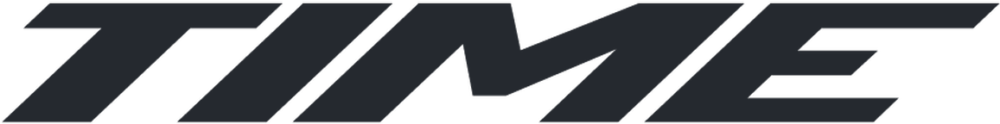
Unermüdlicher FokusSeit 1987 setzt TIME Bicycles Maßstäbe in Technologie, Design und Innovation. Getreu dem Leitsatz Le Défi – The Challenge geht TIME konsequent den anspruchsvollen Weg. Die Marke gehört zu den wenigen weltweit, die ihre Carbonrahmen mit Braided Carbon Structure und Resin Transfer Molding fertigen. Diese in Luft- und Raumfahrt sowie Motorsport bewährten Verfahren sorgen für außergewöhnliche Festigkeit, Leichtigkeit und Stabilität – und machen TIME zu einem Vorreiter in der High-End-Fahrradproduktion. Alle Rahmen werden in Europa entwickelt und produziert, um höchste Qualität und Präzision zu gewährleisten.
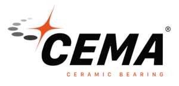
Nur das Beste für jeden FahrerCEMA steht für eine große Auswahl an hochqualitativen Lagern. Von Beginn an hat sich CEMA auf die Entwicklung und Produktion von Keramik-Lagern für den Radsport spezialisiert und wird so den hohen Ansprüchen, die Sportler an ihr Material stellen, gerecht. Zum umfangreichen Sortiment gehören u.a. Innenlager, Steuersatzlager, Schaltröllchen sowie passendes Werkzeug. CEMA Lager werden von verschiedenen professionellen Radsportteams verwendet, u.a. auch bei der UCI World Tour.
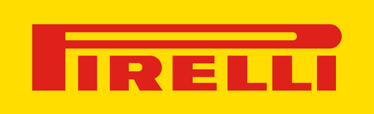
Power is nothing without controlPirelli Cycling ist der Geschäftsbereich von Pirelli, der sich ganz der Welt der Zweiräder widmet. Er verbindet jahrzehntelange Erfahrung in der Reifenindustrie mit innovativen Lösungen für Radfahrer. Das Unternehmen ist auf Reifen für Rennräder, Gravelbikes und MTBs spezialisiert und setzt dabei auf modernste Technologien und hochwertige Materialien. Das Ergebnis ist ein durchweg hohes Leistungsniveau. Das Sortiment umfasst Reifen, die auf allen Untergründen für Grip, Geschwindigkeit und Langlebigkeit sorgen – darunter auch der High-End-Reifen P Zero Race, der vollständig in Italien gefertigt wird und von den besten WorldTour-Teams gefahren wird. Pirellis Anspruch ist es, Radfahrer mit zuverlässigen, leistungsstarken Produkten zu unterstützen – gleichermaßen geeignet für Profis wie für ambitionierte Amateure. Jeder Reifen ist das Resultat kontinuierlicher Forschung und Ausdruck einer tiefen Leidenschaft für den Radsport. Picture credits @tornanti.cc
Keine andere Marke des Radsportuniversums erschüttert das Radsport-Establishment so sehr mit technologischem Fortschritt, wie SRAM dies vermag. 1 x 12, TwentyTwo oder 1×11 – SRAM überdenkt Gewohntes und entdeckt das Außergewöhnliche und das Neue. Eagle, RED eTap, WiFli, Yaw, DoubleTap oder Hydro sind weitere Statements für das radikale Innovationsdenken von SRAM. Schon allein die reine Schalt-Performance macht einen erheblichen Unterschied. Gangwechsel unter Volllast, im gröbsten Gelände, bergauf und ohne dafür den Griff lockern zu müssen. Sport Import ist SRAM Distributor seit 2002.
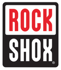
Federungssysteme – das Original1990 revolutionierte RockShox mit der RS-1 die Mountainbikewelt: Mit dieser Innovation begann der Siegeszug von Federungssystemen auf den Trails der Welt. Stahlfedern, Luft- und Ölsysteme, Materialien wie Magnesium, Aluminium, Kunststoffe oder Carbon – RockShox nutzte jede Möglichkeit, um Fahrradfederungen für Sport und Alltag effizient und wartungsarm zu gestalten. Dabei ist den Ingenieuren gelungen, Fahrkomfort, Servicefreundlichkeit, Haltbarkeit und natürlich Funktionalität in allen Produkten zu kombinieren. Sport Import ist RockShox Distributor seit 1992.
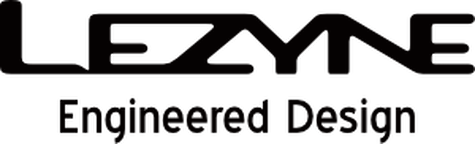
Design Zubehör für die RadweltDie 2007 gegründete Zubehör Linie, die ihresgleichen sucht und bereits weltweit mit zahlreichen Awards ausgezeichnet wurde, steht für Engineered Design. Egal ob bei Multitools, Pumpen oder Beleuchtung - Lezyne bietet höchste Produktqualität aufgewertet durch einmaliges Design. Ein Team von Ingenieuren und Designern unter der Leitung von Micki Kozuscheck gewährleistet die beständig hohe Qualität aller Lezyne-Produkte. In der eigenen Produktionsstätte in Taichung, Taiwan, haben sie von der Produktion bis zur Qualität und Funktion der Bauteile alles vor Ort unter Kontrolle. Sport Import ist Lezyne Distributor seit 2014.
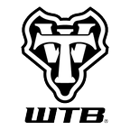
MTB & Gravel Komponenten - erfolgreich seit 1982WTB gehört zu den Pionieren der MTB Marken und wurde 1982 in Marin County/CA gegründet. Zur damaligen Zeit fehlte es an hochwertigem MTB Zubehör, weil MTBs Anfang der 80er Jahre eher zu den seltenen Skurrilitäten zählten, aber nicht zu etablierten Fahrradmodellen. Die drei Gründer, darunter Mark Slate, stellten sich dennoch der Herausforderung, haltbare Komponenten zu entwickeln. Mit Erfolg! Auch beim Thema Gravel zeigte WTB Mut und zählt somit heute zu den erfolgreichsten Marken in diesem Bereich. Sport Import ist WTB Distributor seit 2019.
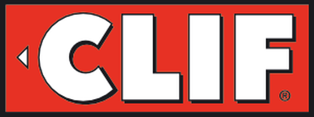
Energie für jeden Sportlichen MomentGary Erickson gründete 1992 seine Firma CLIF Bar und schenkte damit der Sportwelt einen leckeren und energiereichen Sportriegel. Nach zweijähriger Entwicklungszeit folgte die offizielle Firmengründung von CLIF Bar. Heute produziert CLIF Bar Riegel in diversen Geschmacksrichtungen und ist nach wie vor inhabergeführt. Die Qualität der Produkte überzeugt – mittlerweile ist CLIF Bar unter den Energieriegel-Lieferanten die Nr. 1 in Nordamerika und setzt bei der Produktion vorrangig Produkte aus Bio-Anbau ein.
Zipp gehört zu den „most wanted brands“. Aufgebaut hat sich Zipp diesen Ruf durch die Fokussierung auf die vier Kernqualitäten eines perfekten Laufrades: Aerodynamik, Steifigkeit, Haltbarkeit und Gewicht. Je nach Einsatzwunsch zieht Zipp eine Spezialwaffe aus dem Köcher: Für Zeitfahren und Ironman-Distanzen, winklige Bergabfahrten, Gravel-Abenteuer sowie steile Trail-Abfahrten. Um den optimalen Qualitätsmix zu generieren, mussten Experten unzählige Stunden in Windkanälen, Material-Laboren und natürlich auf der Straße und im Gelände verbringen.
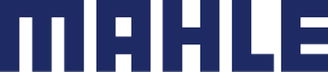
epowered by MAHLEMAHLE SmartBike Systems stellt Komponenten und Systeme für einige der innovativsten eBikes der Welt her. Die Fahrradsparte von Mahle mit Hauptsitz in Palencia, Spanien, entwickelt Hardware- und Softwarelösungen für eBike-Hersteller, Händler und Fahrer. Die innovativen Lösungen des MAHLE SmartBike Systems werden durch einen kontinuierlichen Dialog zwischen den Fahrradmarken, Händlern und Fahrern bestimmt.
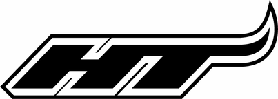
Pedal to the medalHT ist eine High-End-Pedalmarke und wurde 2005 als Tochter der Firma HT Components INC gegründet. Das Unternehmen verfügt über mehr als 50 Jahre Erfahrung in der Entwicklung und Herstellung von Komponenten. Genau richtig, um den heutigen Anforderungen der wachsenden Nachfrage gerecht zu werden. HT setzt dabei nicht nur auf neueste Technologien, sondern auch auf ausgefallene Designs. Durch die Konzentration auf die Entwicklung leistungsstarker Pedale ermöglicht die Marke, um CEO TC Yang, Spitzenathleten ihre Grenzen zu erweitern und Amateuren zu helfen, ihr volles Potenzial auszuschöpfen.
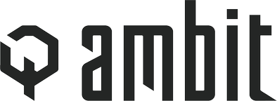
Engineered with the ultimate riding experience in mind“EVERYTHING WE CREATE IS CRAFTED WITH THE UNRIVALED RIDING EXPERIENCE IN MIND.” Dieser Gedanke treibt Ambit Components an und er fließt in jedes einzelne Teil, das sie auf die Trails bringen. Von der Idee und erstem Konzept über den Prototypen bis hin zum finalen Produkt – alles mit dem Ziel, dein Fahrerlebnis auf das nächste Level zu bringen.
Das Ziel von TIME Sport: Die besten Pedale der Welt herzustellen. Durch Passform, Funktion und Performance. Bei TIME Pedale dreht sich alles um den Fahrkomfort. Mit den TIME-Pedale können Fahrer die Schmerzen beseitigen, die sie vorher hatten, ohne Kompromisse bei der Leistung eingehen zu müssen. Dieser Vorteil ergibt sich aus den verschiedenen Spielräumen, der Einstellung der Federspannung und den spezifischen Technologien. Das ist der große Vorteil, den TIME bietet. TIME Sport ist eine Marke der SRAM Gruppe.
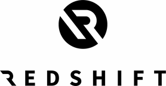
Unlock adventureRedshift Sports wurde 2013 von einem Team aus radsportbegeisterten Maschinenbauingenieuren gegründet. Von Beginn an liegt der Fokus darauf, Komponenten zu entwickeln, die das Fahrerlebnis spürbar komfortabler machen. Das Entwicklerteam bringt dabei umfangreiche Erfahrungen aus den verschiedensten Bereichen mit. Dieses Know-How nutzte Redshift, um die aktuelle Produktlinie (u.a. der beliebte ShockStop Vorbau) auf den Markt zu bringen. Alle Redshift Produkte werden in Philadelphia entwickelt, getestet und von Hand zusammengebaut. Produktqualität und Kundenservice stehen dabei an erster Stelle.
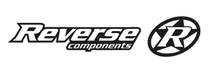
United in ShredAktiv im Mountainbike-Sport sind die beiden Eigentümer Heike und Peter Schmid von REVERSE Components seit den 90er Jahren. Angetrieben aus dieser Leidenschaft, entstehen REVERSE Produkte nicht nur am Schreibtisch, sondern direkt auf dem Trail. Immer auf der Suche nach neuen Lösungen und Entwicklungen, stehen dabei Funktionalität und Sicherheit an erster Stelle. Die Produkte werden deshalb umfassend auf Trails, aber auch im EFBE-Labor getestet. Denn wir sind „United in Shred“.
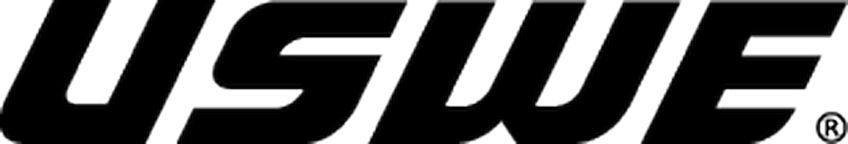
Kein dancing Monkey!Die wackelfreien Action-Rucksäcke mit dem perfekten Sitz auf jeder Abfahrt. Die Mission von USWE ist es seit Tag eins Rucksäcke für alle Abenteuer zu entwickeln, die eng am Fahrer sitzen und auch bei den widrigsten Bedingungen beinahe unbemerkt wie eine zweite Haut am Rücken liegen.
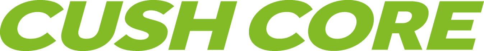
Engineered Tire InsertsVom Anfänger bis zum Weltmeister können alle Fahrer von dem Vertrauen profitieren, das sie beim Fahren mit CushCore gewinnen: Schnelleres, ruhigeres Fahrverhalten, verbesserte Traktion, hervorragende Kurvenlage, zuverlässiger Felgen- und Reifenschutz.
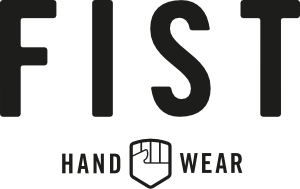
Erstklassige Statement-HandschuheHandschuhe müssen nicht immer langweilig oder schwarz sein. Die australische Marke FIST Handwear beweist, dass Handschuhe mit Burgern, Donuts, Hunden oder Palmen zu einem echten Hingucker werden können. Neben den auffälligen Designs besticht FIST durch eine perfekte Passform, die sich an jede Hand schmiegt. Das japanische Obermaterial und das vegane Clarino™-Leder sind qualitativ hochwertig verarbeitet, um lange Freude an dem Handschuh zu garantieren.
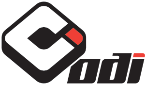
Der beste GriffODI ist die #1 im Bereich BMX, MTB und Moto-X Griffe! Dies wird seit Jahren durch eine der weltweit größten Leserumfragen auf vitalbmx.com bestätigt. Diesen Erfolg hat ODI seiner langen Erfahrung zu verdanken, denn seit 1983 konzentriert sich ODI auf die Herstellung von Griffen. Von Anfang an produzierte ODI in einer eigenen Fabrik in Riverside, Kalifornien. Dort werden die Griffe entworfen, produziert und getestet, es werden beste Materialien verwendet und mittlerweile werden Reste nicht entsorgt, sondern immer und immer wieder recycelt und erneut verarbeitet.
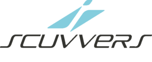
Auto-Sitzbezüge für aktive MenschenScuvvers ist ein faltbarer Sitzbezug für aktive Menschen, die ihre Autositze vor Schmutz, Schweiß, Sand, Wasser und Sonnenschutzmittel schützen wollen. Scuvvers ist die innovative und faltbare Lösung, mit der die Sitze nicht permanent abgedeckt sein müssen. Erfunden in Australien von einer echten innovativen Outdoor-Liebhaber Familie.
Dynamic Bike Care – eine seit über 30 Jahren existierende Marke – steht seit Anfang 2020 auf eigenen Beinen. Gegründet in den 80er Jahren und einst Teil eines deutschen Vertriebsunternehmens in der Fahrradindustrie, bauen die neuen Inhaber von Dynamic auf ein großes Erbe. Umgeben von Wissenschaftlern, technischen Labors und professionellen Radsportteams, in Kombination mit einer lebendigen und inspirierenden Start-Up-Atmosphäre, werden heute neue, noch leistungsfähigere Produkte entwickelt, um das Beste aus jeder Fahrt herauszuholen.
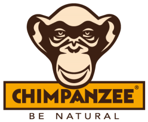
Hochwertige Sportnahrung. Vegan, glutenfrei und lecker.Chimpanzee Nutrition steht für erstklassige Nahrungsergänzung für Sportler und Abenteurer. Mit Chimpanzee wird eine optimale Versorgung auf Radtouren, Bikepacking-Trips, Marathons und Wanderungen gewährleistet. Alle Produkte werden in Europa aus erlesenen Zutaten produziert und kommen ohne künstliche Zusatzstoffe und Gentechnik aus.
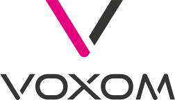
Ehrliche Qualität, Funktion und Haltbarkeit zu einem fairen Preis.Genau das bieten wir mit VOXOM – Das Zubehör. Über 400 Artikel finden sich in unserem Portfolio, z.B. Schlösser, Beleuchtung, Werkzeuge, Bremsbeläge, Pedale oder Werkstattbedarf um nur einige zu nennen. Seit vielen Jahren entwickeln wir unser Sortiment stetig weiter und mit über 35 Jahren Erfahrung in der Fahrradbranche wissen wir, worauf es ankommt.
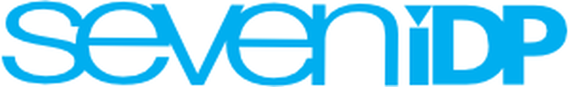
Leicht, perfekter Sitz und hoher Tragekomfort7iDP hat sich den Schutz für Biker auf die Fahnen geschrieben. Die Entwicklung von Helmen, Protektoren und Schutzbekleidung wird dabei von vielen namhaften Fahrern unterstützt, um die Produkte auf alle Bedürfnisse anzupassen. Daher sind die Protektoren durch den perfekten Sitz und das leichte Gewicht beim Fahren kaum spürbar.
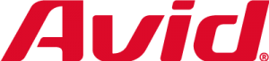
BremsenspezialistSeit 1991 steht Avid auf der Radsport-Bühne und erntete zunehmend Beifall für seine innovativen und ergonomischen Produkte. Ein Spezialist wie Avid kontrolliert alle Bausteine seines Systems, vom Bremshebel bis hin zu Bremsbelag und Bremsscheibe für unterschiedliche Bedingungen und Systeme, und kann so immer für die Sicherheit der Sportler garantieren. Wer die Verantwortung für Sicherheit so perfekt und racetauglich umsetzt, ist nicht umsonst an der Spitze.
Hochbelastbare Mountainbike-Komponenten sind das Spezialgebiet von Truvativ. Bauteile wie Sattelstütze, Lenker und Vorbau von Truvativ gelten unter Insidern, genau wie Kurbeln und Innenlager, als unverwüstlich. Profis testen, was engagierten Sportlern das beste und sicherste Fahrgefühl vermitteln soll. Truvativ steht für ausgereifte Produkte, die auch unter härtesten Bedingungen treu ihren Dienst tun.
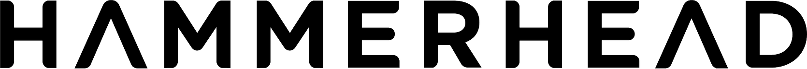
Mach jede Fahrt besser als die letzteHammerhead ist ein Technologieunternehmen, das es sich zur Aufgabe gemacht hat, alle Menschen zu inspirieren und dabei zu unterstützen, ihr sportliches Potenzial durch Radfahren zu entfalten. Der Karoo Radcomputer von Hammerhead lässt Dich Radfahren so erleben, wie es sein sollte, denn er ist einer der intuitivsten und fortschrittlichsten Radcomputer der Welt. Sieh, was für Dich am wichtigsten ist, mit der besten Routenplanung und Visualisierung seiner Klasse. Einfache Bedienung und Anpassung - Hole Dir all die Funktionen, die Du Dir wünschst, ganz ohne Komplexität. Erweiterte Konnektivität mit Deinen Lieblingsgeräten und -Apps, damit Du so fahren kannst, wie Du willst. Hammerhead ist Teil der SRAM LLC.
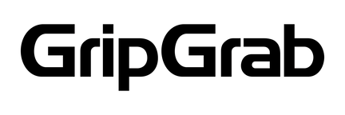
Ride all yearJeden Morgen gibt es irgendwo auf der Welt einen Gripster, der aus dem Fenster schaut, die Wetterbedingungen prüft, sich anzieht und sich auf sein Fahrrad schwingt - aber anstatt direkt zur Arbeit zu fahren, macht er einen Abstecher und verwandelt seinen klassischen Arbeitsweg in einen wunderbaren Ausflug in das zauberhafte Morgenlicht. Mit diesem Gedanken im Hinterkopf entwickelt GripGrab Produkte, die vor allen Wetterbedingungen schützen. GripGrab ist ein Familienunternehmen. Es wurde im Jahr 2000 von den Brüdern Kristian, Martin und Bjørn Krøyer gegründet.
Gegründet 1996, haben es die Kölner Jungs und Mädels von WETHEPEOPLE mittlerweile zu einer internationalen BMX-Größe geschafft und 2016 sogar die Awards für die „Best Brand“ bei der VitalBMX und FreedomBMX Leserumfrage abgeräumt – das hat bisher noch kein europäischer BMX-Hersteller geschafft! Dabei steht WETHEPEOPLE für Qualität „Designed in Germany“: Die Produkte, Teile und Kompletträder von WETHEPEOPLE sind durchweg im High-End Bereich angesiedelt und gehen absolut keine Kompromisse ein.
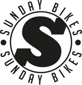
Awesome BMX Company„You have chosen wisely“ lautet der selbstbewusste Slogan von Sunday Bikes. Zu Recht, denn seit der Markteinführung 2005 ist Sunday eine der erfolgreichsten BMX-Firmen im Teile-Bereich und bei Kompletträdern. Sunday Bikes steht für absolute Leidenschaft im BMX-Sport – denn hier werden Räder von und für BMXer gemacht. Gegründet von dem Street Pionier Jim Cielencki und mitentwickelt von weiteren Profi-Fahrern, kann sich Sunday seit mittlerweile über 10 Jahren in der BMX-Szene beweisen und gilt mit seinen Innovationen als Vorreiter in Sachen BMX.
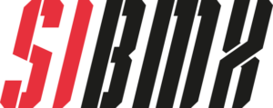
BMX-Räder für den einfachen EinstiegSIBMX ist wie es der Name vermuten lässt unsere Eigenmarke. In erster Linie möchten wir mit diesen Rädern den BMX-Neulingen den Einstieg versüßen und erleichtern. Gerade im Einstiegsbereich werden oft Räder angeboten, die vielleicht gut aussehen, aber überhaupt nicht BMX-tauglich sind. Wir blenden nicht mit gut klingenden Produktmerkmalen sondern konzentrieren uns bei den Rädern auf die wichtigen Dinge! Außerdem kann man sich bei unseren Rädern sicher sein, dass es Ersatzteile gibt und diese auch passen.
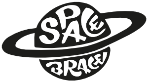
Optimale Protektoren vor, während und nach einer VerletzungDie Geschichte von Space Brace beginnt mit einer Knöchelverletzung des Gründers und BMX-Profis Mike Gray. Alle gängigen Produkte halfen ihm nicht und so nutzte er die erzwungene Auszeit, um eine eigene Lösung zu entwickeln. Es entstand die erste Kombination aus einem herkömmlichen Knöchelschoner und einer orthopädischen Fußstütze. Viele seiner namhaften BMX-Freunde unterstützen ihn bei der Entwicklung und dem Testen der Produkte. Eine Marke von Fahrern für Fahrer!
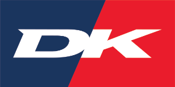
DK-BMX since 19791979 begann alles in Ohio, USA: Bill Danishek verbog ständig seinen BMX-Vorbau, bis sein Vater, Charlie, der als Werkzeugmacher arbeitete, einen eigenen Vorbau herstellte! Dieser Vorbau war viel stabiler und in den 80er Jahren der Vorbau im BMX Race Bereich! Auch in Deutschland sah man diesen Vorbau fast an jedem Rad! Heute spiegelt sich die langjährige Erfahrung in den Produkten von DK wider.
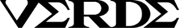
Simple. Clean. Classic.Verde wurde 2007 von Steve Buddendeck mit der Absicht gegründet, klassische aber gut funktionierende BMX Räder zu schaffen. Mit viel Liebe fürs Detail aber einem sauberen Design gelang ihm der Sprung zu einer sehr angesehenen BMX Marke. Bei Verde gab und gibt es kein Rad ohne industrie-gelagerte Naben, die Rahmen sind gut durchdacht und sind spezieller als das klassische Design vermuten lässt! Optisch mussten die Räder schon immer ein Blickfang sein, das schafft man durch wirklich gut ausgewählte Farben..., rideverde!
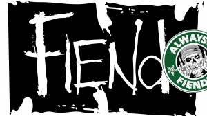
Die Street CompanyFiend = 100% Street! Was auch kein Wunder ist, denn einer der Gründer und Chefs hört auf den Namen Garrett Reynolds! Kein anderer Fahrer verkörpert BMX-Street so wie Garrett und das schon seit Jahrzehnten. Und das spiegelt sich in seinen Produkten wider. Neben Garrett sind aber noch andere Street-Kanonen im Team: Ty Morrow, JJ Palmere, Colin Varanyak, Augie Simoncini und Lewis Mills, um nur die erste Garde zu nennen.
Fairdale - Stahlräder aus Leidenschaft! Zuverlässigkeit, einfache Instandsetzung und keine Abstriche beim Fahrspaß sind die Key Points von Fairdale. Designed von der BMX Legende Taj Mihelich hat Fairdale alles vom BMX-Cruiser bis zum Gravel-Bike im Programm.
Demolition wurde im Jahr 2000 von der Street Legende Brian Castillo gegründet. Seine Freunde und ersten Team Fahrer waren Jason Enns und Kris Bennett, mit denen er auch die ersten Teile entwickelte, die ihren hohen Ansprüchen entsprachen. Seit Beginn von Demolition lautete das Motto: „designed from riders for riders“. Heute sind es Fahrer wie Dennis Enarson, Mike „Hucker“ Clark oder Kevin Peraza, die Demolition weltweit präsentieren und bei der Entwicklung der Produkte helfen!
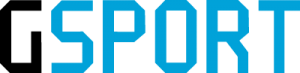
Der BMX Laufrad SpezialistGSport ist DER Spezialist für BMX in Sachen Laufräder. Der Name steht für super technische Naben, innovative Speichennippel und fast unzerstörbare Felgenringe.
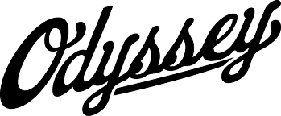
High Quality BMX PartsOdyssey hat nichts mit griechischer Mythologie zu tun, wenngleich der Erfolg sagenhaft ist. Die Erfolgsgeschichte des BMX Teile Herstellers begann 1985 in Kalifornien. Seitdem hat Odyssey es immer wieder geschafft, mit neuen Innovationen die Maßstäbe in der BMX Welt neu zu definieren: das Gyro-Rotor System, die 41 Thermal Produkte, die Hazard Lite Felge und der Elementary Vorbau – um nur ein paar zu nennen.
Eine richtige BMX-Company besteht aus waschechten BMXern – so auch Heresy. Wie bei fast jeder Gründungsstory einer BMX-Firma fängt es auch hier damit an, dass eines Abends ein paar BMXer nach einer ausgiebigen BMX-Session zusammensaßen. So geschehen bei Alexis Desolneux, Michael Husser and Sebastian Grubinger 2009 in Wien, als sie ihrem Frust mit den bisherigen Sponsoren freien Lauf ließen. Seit 2010 produziert Heresy im kleinen Kreis hochwertige BMX-Rahmen, -Gabeln, -Lenker und -Teile. Genau das Richtige für alle Flatlander da draußen.
Volume ist seit 1999 fester Bestandteil der BMX-Szene und gilt damit als eines der ältesten BMX-Unternehmen. Mit BMX-Legende Brian Castillo als Kopf, bringt Volume durch seine langjährige Erfahrung jede Menge Fingerspitzengefühl in die Entwicklung von hochwertigen und robusten BMX-Produkten. Volume gehört seit Anbeginn zu den wegweisenden Unternehmen, die den Sport immer wieder aufs Neue geformt haben. Hier wird das Motto „Gemacht von BMXern für BMXer“ wirklich gelebt – denn nur das, was den eigenen Ansprüchen genügt, geht auch in Produktion.
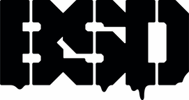
Komplettes Sortiment an hochwertigen BMX-Teilen1991 fing alles mit dem Dreh eines Videos an und 1998 kam das erste Produkt auf den Markt, ein 44T Kettenblatt aus 10mm dicken Aluminium! Mitgründer und Inhaber Grant Smith war und ist gelernter Baumaschinen Ingenieur, der natürlich ein hohes Fachwissen mitbringt und dies spiegelt sich in allen BSD Teilen wider.
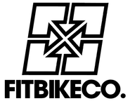
BMX Räder designt und entwickelt in KalifornienFitBikeCo. ist eine amerikanische BMX Marke aus Kalifonien und einer der Mitgründer ist kein geringerer als Chris Möller von S&M BMX! Bei den Rädern und Teilen wird sehr hoher Wert auf Qualität, Funktion und Design gelegt, was leicht zu erkennen ist.
Deine starke Marke aus der Fahrrad-Branche sucht einen kompetenten und schlagkräftigen Distributor? Wir haben mehr als 40 Jahre Erfahrung als Vertrieb für Fahrradzubehör, Fahrradteile und Kompletträder.
Mit unserem Team bieten wir Dir aber viel mehr als nur eine europäische Vertriebsstruktur. Zu unserem Gesamtpaket zählen zudem eine zentrale Lagerhaltung am eigenen Standort, kompetenter Service sowie Sichtbarkeit für die Marke durch Category Management und Marketing. Und immer der persönliche Kontakt, der für uns im Business entscheidend ist.
Du hast Interesse? Nimm vertraulich Kontakt zu unserer Geschäftsleitung auf.
Unsere Marken haben Dich überzeugt? Unsere hohe Lieferfähigkeit, das Know-How unseres Vertriebs-Teams und unsere innovativen Order Tools werden Dich nicht enttäuschen.
Werde einer von über 3.500 Händlern in ganz Europa und registriere Dich jetzt für unseren B2B Shop – schnell einfach und digital.